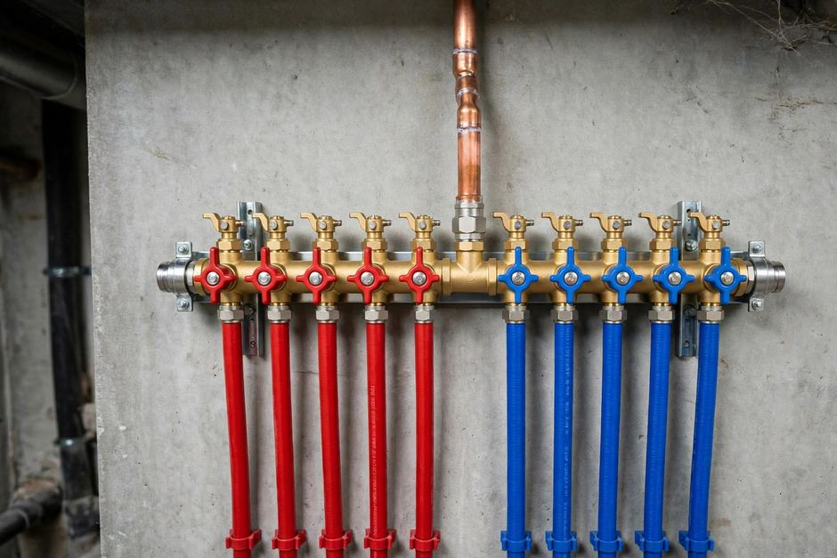
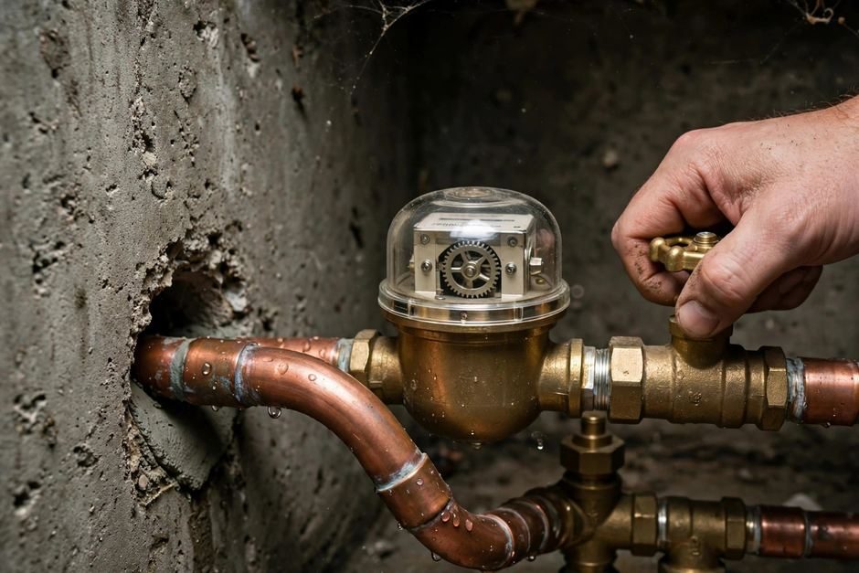

Water Service Line Work
Water Main Line Replacement in Belleville, IL
A failing water main line can show up as discolored water, damp soil, or low pressure at fixtures in Belleville, IL. Hinkle Plumbing Company assesses the line, the shutoff, and surrounding soil before planning replacement work. Material checks come before digging decisions, with repiping context for interior piping.
1610 W Main St, Belleville, IL 62220Monday through Friday, 8:00 AM to 4:30 PM(618) 677-6556
What This Service Covers
Water Main Line Replacement Scope in Belleville
Replacement work covers the buried line that brings water from the street connection into a building. Planning separates interior piping concerns from service-line concerns, and material identification shapes the path forward for each property in Belleville, IL.
Service-Line Assessment
The visible piping, shutoff, meter area, and signs of leakage are reviewed to understand line condition. Findings shape whether repair, partial work, or full replacement is discussed, and interior piping is considered separately from the buried service line.
Lead-Line Inventory Check
Before paying for lead-line replacement, readers are directed to check the water provider inventory and replacement program for the address. Inventory details come from the provider, and cost responsibility is confirmed through that program rather than assumed from general guidance.
Illinois Act Explainer
The Illinois Lead Service Line Replacement and Notification Act generally requires community water supplies to inventory service-line materials and maintain a replacement plan. Partial lead replacement is generally prohibited apart from narrow exceptions, and general framing only is used here.
Non-Lead Replacement Causes
Leaks, corrosion, low pressure, and freeze damage can call for replacement where lead is not involved. Each cause is assessed on its own evidence, and the repair path reflects the material, the failure pattern, and the condition of connected piping.
Access and Restoration Planning
Access routes, surface coverings, landscaping, and restoration needs are reviewed before digging. Planning accounts for soil conditions and the path of the line, so surface work and reinstatement are understood as part of the overall scope.
Shutoff and Connection Review
Shutoff operation, connection points, and interior tie-in locations are reviewed during planning. Clear shutoff control and sound connections support a controlled replacement sequence and reduce disruption to water use during the work.
About Hinkle Plumbing Company
A Belleville Base for Water Line Work
Hinkle Plumbing Company's Belleville office is the base for water service line work on properties across the city. Water line planning starts with material checks, provider inventory review, and a clear discussion of scope.
Water main line work benefits from careful sequencing, because the buried line, the interior piping, and the provider program each play a part. Hinkle Plumbing Company reviews visible conditions, discusses findings, and plans access and restoration with the property in mind. Readers with a possible lead line are directed to the provider inventory before committing to replacement work, and leak detection findings can help separate a service-line leak from an interior leak.

How we workImage showing a technician reviewing a water service line connection at a Belleville home.
How Work Is Planned
Water Line Planning Steps
The steps flex with the condition of the job, but the sequence stays the same.
Discuss Symptoms
Discolored water, damp areas, pressure changes, and water use patterns are discussed to narrow the concern. Symptom details help separate service-line issues from fixture or interior piping issues before any digging is considered.
Check Material and Records
Service-line material is checked through visible piping and provider inventory information for the address. Where lead is possible, the provider program is checked before replacement is paid for, and no Belleville inventory claim is made from general guidance.
Review Access and Path
The line path, surface coverings, and access points are reviewed to plan excavation and restoration. Soil conditions and nearby utilities shape the approach, and surface reinstatement is included in the scope discussion from the start.
Set Replacement Scope
Length, material, connection points, and restoration needs are set out as the replacement scope. Interior piping work is scoped separately, so service-line replacement and interior repiping are not confused with each other.
Complete and Check
After replacement, connections, shutoff operation, and water flow at fixtures are checked. The work area is reviewed, restoration needs are confirmed, and findings are discussed so the completed scope is understood.
Methods and Materials
Replacement Methods for Belleville Service Lines
Method selection reflects line material, soil conditions, access, and the condition of connected piping. Each method below is considered during planning, and the chosen path reflects the findings for the specific property.
Full Line Replacement
Full replacement renews the buried line along its path where condition, material, or repeated failure supports that scope. Access, depth planning, and restoration are discussed together, and interior tie-in points are reviewed before work begins.
Targeted Section Work
Where evidence points to a limited failure, a targeted section may be discussed instead of full renewal. The remaining line is still assessed, because a single repair does not resolve widespread corrosion or material concerns elsewhere along the run.
Material Identification
In homes from earlier building eras, expect galvanized supply piping and check for lead service-line material through visible piping and provider records. Material findings shape the replacement path and determine whether provider program review comes before paid work.
Copper and Plastic Piping
Copper and PEX are among the materials discussed for replacement piping, with selection reflecting code context, soil conditions, and connection requirements. Material choice is confirmed during planning and is matched to the building and the service-line path.
Trench Planning
Trench layout reflects the line path, surface coverings, and nearby buried services. Depth follows state rules and local conditions, and depth is confirmed during planning rather than assumed from general guidance.
Connection and Testing
Connections at the street side and the building side are reviewed, and flow and shutoff operation are checked after installation. Testing confirms that the renewed line delivers water to fixtures and that connections remain sound.
Common Patterns
When Water Line Replacement Is Discussed
Water line concerns often appear gradually, through water quality changes, damp ground, or pressure shifts. The patterns below describe common reasons for an assessment, without describing a specific property or job.

Discolored Water and Pressure Change
A common call describes discolored water at fixtures combined with lower pressure, with no single fixture explaining the pattern. Assessment reviews the service line, the shutoff, and interior piping to separate a buried-line concern from a fixture concern. Material checks and provider inventory review come before replacement scope is discussed, and access and restoration factors are reviewed alongside line condition.
Damp Soil Along the Line Path
A common call describes damp soil or soft ground along the expected line path, with water use patterns that suggest a hidden leak. Assessment checks visible piping, shutoff control, and ground conditions to narrow the source. Where material questions arise, provider inventory review comes before paid replacement work, and the scope discussion covers access, length, and surface restoration. Findings are reviewed together before repair scope is discussed for the home.
Signs to Note
Signs That Point to the Water Main Line
Most calls fall into a few patterns. Knowing which pattern applies decides what the visit involves.
Discolored Water at Fixtures
Discolored water can reflect corrosion or disturbance inside piping, and the pattern across fixtures helps narrow the source. Service-line material and interior piping are both considered, because discoloration alone does not identify which section is involved.
Damp or Soft Ground
Damp or soft ground along the line path can suggest a buried leak, particularly where the pattern persists apart from rainfall. Ground conditions, line path, and shutoff findings are reviewed together before excavation is discussed.
Low Pressure Across Fixtures
Low pressure at several fixtures can point to a restriction or leak in the service line or interior piping. Pressure patterns are compared across fixtures, and shutoff condition is checked as part of the assessment.
Unknown Service-Line Material
Unknown material calls for a provider inventory check before replacement decisions are made. Material identification protects against paying for work that falls within a provider program, and it shapes the replacement path for the property.
Scope Factors
What Shapes Water Line Replacement Scope
Length, access, material, and restoration shape the scope for each property.
Line Length and Path
Longer runs, indirect paths, and obstructions along the route add scope to excavation and restoration. Line path findings from assessment shape the plan, and scope is discussed by phone before work is scheduled.
Access and Surface Work
Driveways, walkways, landscaping, and other surface coverings affect access and reinstatement needs. Surface conditions are reviewed during planning, and restoration scope is discussed alongside the piping work itself. Findings are discussed by phone.
Material and Connections
Material selection, connection points, and interior tie-in work shape the overall scope. Findings from material checks and provider review are included in the discussion, and readers are invited to call to discuss scope for the property.
Reviews from Google
What Customers Say on Google
★★★★★
“Very prompt and responsive, the worker was friendly and informative! Will use this company again!”
★★★★★
“Don did an outstanding job for me when I needed him and highly recommend his business”
★★★★★
“Rated 5.0 out of 5 across 3 Google reviews, all five stars.”

Should I check the water provider inventory before paying for lead-line replacement?
Yes. Check the water provider inventory and replacement program for the address before paying for lead-line replacement. Inventory details and cost responsibility are confirmed through the provider program, and general guidance does not replace an address-specific provider check. Findings are reviewed together, and household observations are included in the discussion.
How is a service-line leak separated from an interior leak?
Assessment compares symptoms across fixtures, reviews visible piping and shutoff condition, and checks ground conditions along the line path. Findings help identify whether the concern sits in the buried line, in interior piping, or at a connection point, and scope follows from those findings.
What materials are checked in older Belleville homes?
In homes from earlier building eras, expect galvanized supply piping and check for lead service-line material through visible piping and provider records. Copper and PEX are among the materials discussed for replacement, with selection confirmed during planning for the building and the line path.
What affects the scope of a replacement job?
Line length, access, surface coverings, material selection, connection points, and restoration needs shape the scope. Each factor is reviewed during assessment, and readers are invited to call (618) 677-6556 to discuss scope for a specific property in Belleville. Findings are discussed by phone before work is scheduled.
Related services
Other Plumbing Services We Handle

Repiping in Belleville, IL
Interior repiping renews supply piping inside a building and is scoped separately from buried service-line replacement work.
Leak Detection in Belleville, IL
Leak detection helps separate hidden interior leaks from service-line leaks before replacement scope is set.
Emergency Plumbing in Belleville, IL
Emergency plumbing covers burst pipes, flooding, and other urgent plumbing events that call for a call during stated hours.Mon–Fri 8:00 AM–4:30 PM
Discuss Water Line Replacement in Belleville
Call (618) 677-6556 during Monday through Friday, 8:00 AM to 4:30 PM to discuss water main line concerns in Belleville. Closed Saturday and Sunday. Material checks and provider inventory review are discussed before replacement scope is set.
Talk with the local team
Request Main Water Line Replacement
Call (618) 677-6556 during office hours, Monday through Friday, 8:00 AM to 4:30 PM. Tell us what is happening and we will talk through the next step.